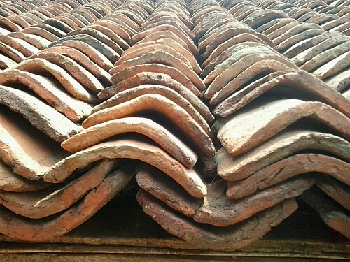
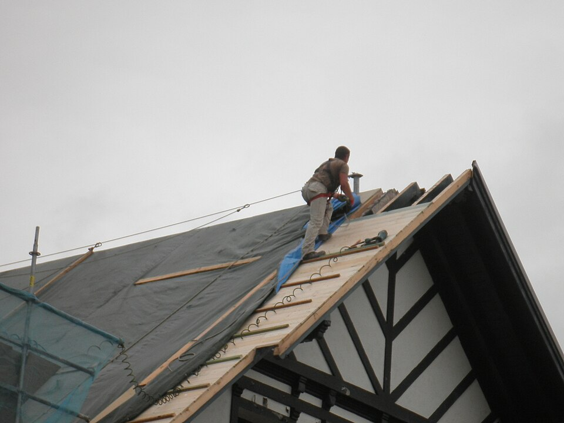
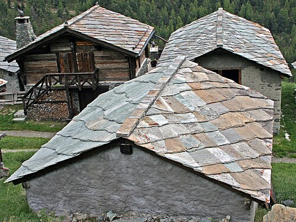
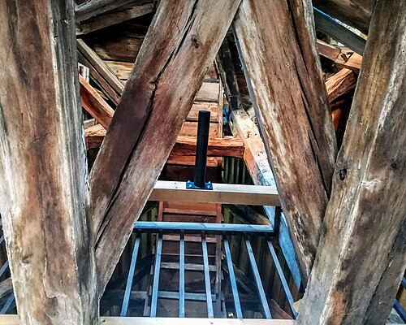
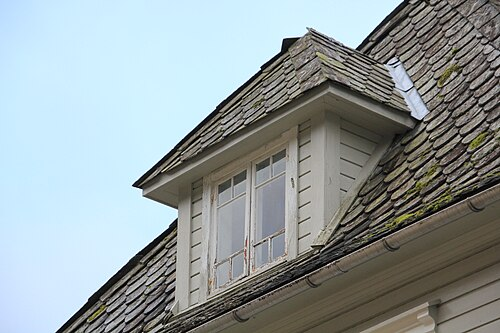
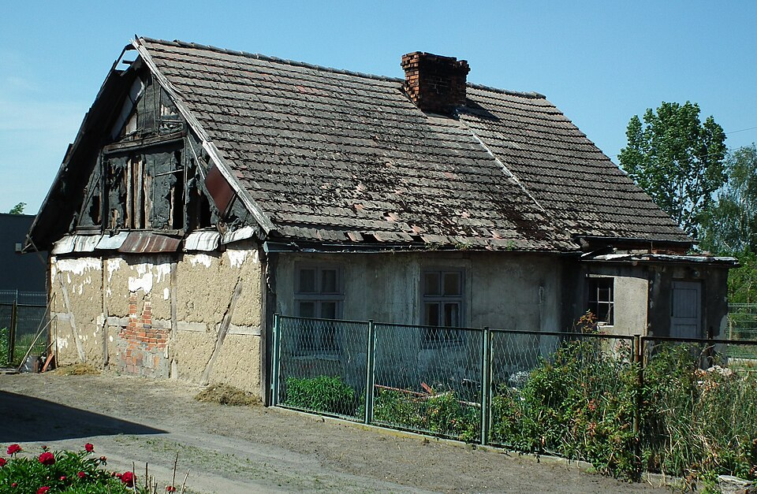
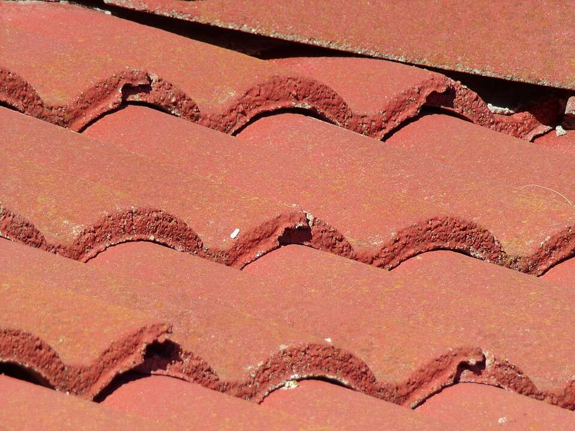
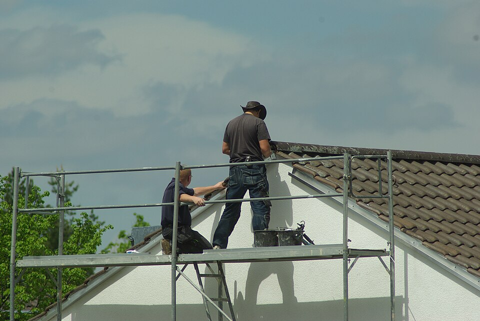

Toiture en tuiles
Tuiles cassées remplacées, faîtage refait au mortier ou à sec, toit entier repris en tuiles plates ou mécaniques.
Couvreur à Neufchâtel-en-Bray depuis 2009
Une fuite après un coup de vent, des ardoises qui glissent, un toit à refaire : on vient voir le toit avant de chiffrer, et vous recevez un devis ligne par ligne sous 8 jours.


Tuiles cassées remplacées, faîtage refait au mortier ou à sec, toit entier repris en tuiles plates ou mécaniques.

Pose au crochet ou au clou, noues et rives refaites, en particulier sur les longères et les maisons à colombages.

Les bois sont contrôlés pièce par pièce. On change ceux qui ont pris l'eau et on traite le reste.

Pose de fenêtres de toit, gouttières et descentes en zinc, abergements de cheminée.

On monte voir l'état des tuiles, de la charpente et des gouttières. Vous recevez les photos, même si vous ne donnez pas suite.

Ligne par ligne, avec les tuiles ou les ardoises qui vont avec votre maison et la date possible du chantier.

Échafaudage monté, toit bâché chaque soir, déchets emportés à la déchetterie : vous retrouvez votre jardin propre.
Dans un rayon d'environ 30 km autour de Neufchâtel-en-Bray. Au-delà, demandez quand même : on se déplace pour les chantiers complets.
Décrivez le problème en quelques mots. On vous rappelle ou on vous écrit pour fixer la visite.
Une urgence après une tempête ? Dites-le dans le message : on bâche en priorité.